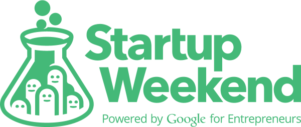

How we got here.
Yushan built ecosystems, scouted technology for the world's largest industrial companies, advised venture funds, founded an accelerator — and the founder is back at the helm.
Founded in Taipei — and lit the spark
Yushan Ventures established to bridge global innovation and Asia's ecosystems. Introduced Startup Weekend to Taiwan and ran the MobileMonday Taipei chapter. In these early years Yushan also made a handful of direct angel investments of its own capital into Taiwanese startups — most since wound down; Lucent Sky, a web-security company, remains.

MobileMonday TaipeiCo-built the APEC O2O Accelerator
Conceived and co-built the APEC O2O accelerator with Taiwan's government — running startup programs around the world, from Nanjing to Lima.
Volkswagen Group, Audi & Coca-Cola
Became technology scouting partner to the Volkswagen Group and Audi — and introduced ProLogium, the Taiwanese solid-state lithium-ceramic battery maker, to Audi. Ran a China scouting engagement for Coca-Cola; toured 10 cities with GSMA on "The Rise of Asia's Innovation Machines".
VC partner to Malaysia's Smart Investment Facilitation
Appointed VC partner to the Smart Investment Facilitation programme, run with MDEC and Cradle Fund. Opened with an Investor Readiness Workshop in Kuala Lumpur for twenty Malaysian startups, then coached the five with the strongest fundraising potential through to term sheets.
Venture partner & ABB / Siam Cement scouting
Venture partner to HeidelbergCement's Foundamental fund; scouted vision tech in Japan for ABB's YuMi robot and high-temperature sensors for Siam Cement. Founded Mosaic Venture Lab in 2019, powered by Audi AG and Taiwan's MoEA.
Yushan rebooted
With Mosaic running independently, the founder returns to Yushan full-time — scouting, investment advisory, and startup growth under one roof again.